Accenteur mouchet
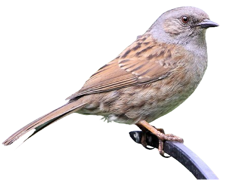
L'Accenteur mouchet a la taille du Rougegorge familier, mais pas son allure. Il évoque un moineau par son manteau brun chaud marqué de noir, d'où une possible confusion, mais il s'en distingue immédiatement par la finesse de son bec. Chez l'adulte, un gris de cendre envahit la tête et la poitrine, et les flancs présentent des flammèches brun-roux. Sur le dessus, les grandes couvertures et les tertiaires présentent une pointe pâle formant une esquisse de barre sur les premières. L'iris est noisette. Les pattes sont jaunâtres ou rougeâtres, la queue entièrement brun sombre. De loin, il se présente comme un petit oiseau uniformément sombre. Il n'y a pas de dimorphisme sexuel marqué. Le mâle est simplement d'un gris plus appuyé. Il existe de petites différences de couleur suivant les sous-espèces. Le juvénile montre très peu de gris dans le plumage et sa poitrine est fortement striée de brun. Son iris est plus clair ainsi que son bec.
Les huit sous-espèces actuellement décrites ne diffèrent entre elles que par des détails comme un plumage plus ou moins sombre ou un gris de tête plus ou moins étendu et prononcé.
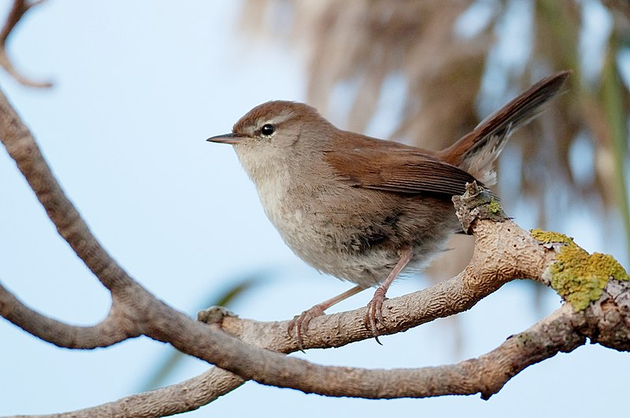
Bouscarle de Cetti
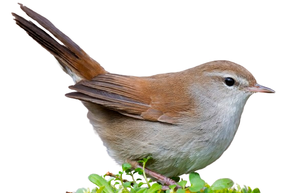
La Bouscarle de Cetti est un petit passereau au plumage et au comportement discrets. Par son bec fin et son allure, elle évoque une fauvette.
Les parties supérieures sont d'un brun chaud, nettement nuancé de châtain. Rémiges et rectrices sont brun sombre. La projection primaire est très courte. Quant à la queue, bien que pourvue de 10 rectrices seulement (la norme est de 12), elle est ample (caractère de famille) et légèrement arrondie à l'extrémité, avec les plumes liserées de châtain.
La tête présente un fin sourcil pâle qui parfois s'élargit en arrière de l'œil en devenant diffus. Une teinte grise envahit les côtés du cou et de la tête. La gorge est blanc à crème. L'œil sombre est souligné par un arc oculaire blanc qui fait le pendant à son homologue supérieur, fondu dans le sourcil. Le bec fin et assez court est noir, avec la base de la mandibule inférieure plus pâle, rosée.
Les parties inférieures sont chamois sombre avec la poitrine envahie du même gris que les joues. Les pattes robustes sont jaunâtres, rosâtres ou rougeâtres.
Le juvénile a un plumage plus terne.
Elle pourrait être confondue avec la Locustelle luscinioïde qui peut fréquenter les mêmes roselières, mais cette dernière est d'un brun plus froid, ne présente pas de nuance grise à l'avant du corps, possède un bec plus fort et montre des sous-caudales très longues.
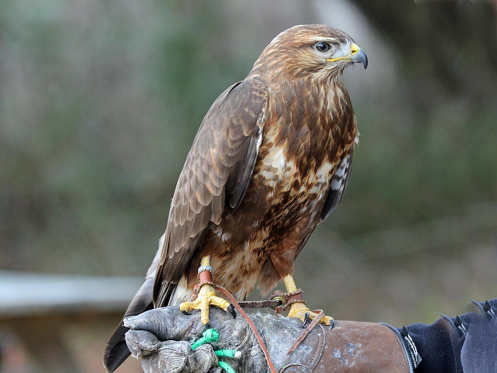
Buse variable
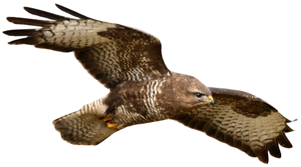
La Buse variable, comme son nom l'indique, a un plumage extrêmement variable. Cela peut aller d'un blanc presque pur à un brun sombre quasi uniforme, avec tous les intermédiaires possibles et imaginables. C'est très déroutant pour un ornithologue débutant. Mais heureusement, dans la majorité des cas, l'oiseau est d'un brun moyen avec des caractéristiques spécifiques que je vais décrire, mais il faut bien avoir en tête que les variantes sont nombreuses. Il est admis que les oiseaux du nord de l'aire sont plus pâles que ceux du sud.
La silhouette est massive, particulièrement chez la femelle, plus grande et plus robuste que le mâle. La pointe des ailes fermées atteint à peu près l'extrêmité de la queue. La tête est assez grosse, faisant paraître le cou engoncé dans les épaules.
Le plumage adulte se caractérise par une relative uniformité des parties supérieures.
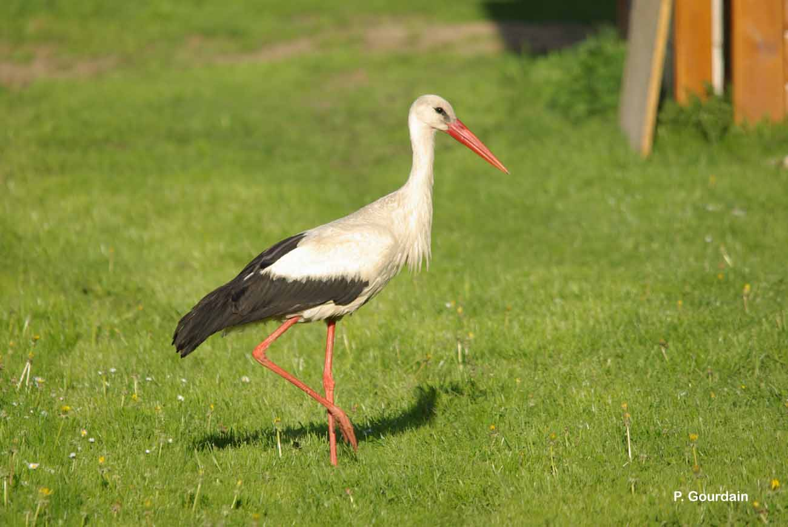
Cigogne blanche
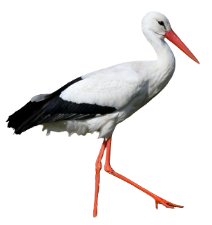
La Cigogne blanche est un grand échassier au plumage blanc et noir, sans dimorphisme sexuel. C'est un oiseau bien connu et qui ne passe pas inaperçu dans son environnement.
Le plumage de contour et la queue sont blancs tandis que les ailes sont bicolores. Les rémiges, l'alule, les grandes couvertures et les couvertures primaires supérieures sont noires, le reste blanc. En vue supérieure d'une cigogne en vol, on voit que le noir de l'aile n'est pas homogène, mais que les rémiges primaires internes et les secondaires montrent un net éclaircissement le long du rachis, d'où un aspect strié typique de l'arrière de l'aile. En période nuptiale, des plumes blanches allongées apparaissent à la base du cou.
Le bec, fort et en poignard, est rouge sang, de même que les longues pattes. À la base inférieure du bec, la zone gulaire dénudée est rouge et noire.
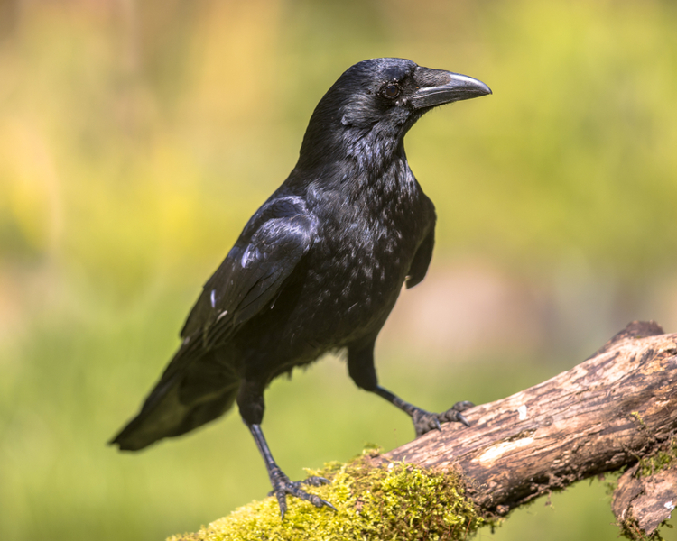
Corneille noire
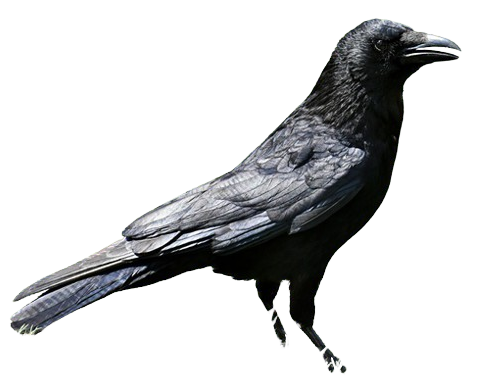
La Corneille noire appartient à la famille des corvidés qui comprend les plus grands des passereaux du monde, et dans cette famille au genre Corvus dont la majorité des membres ont un plumage entièrement noir.
De son nom scientifique Corvus corone, la Corneille noire correspond bien à ce schéma. Tout chez elle est noir, de la pointe du bec au bout de la queue en passant par l'œil et les pattes. Chez l'adulte, le plumage neuf est lustré et brille au soleil avec même des reflets bleus ou verts. Avec l'usure, il devient terne, brunâtre. Les sexes sont identiques. Le juvénile se distingue à son plumage noir moins "serré", à son œil plus gris et surtout à l'intérieur de la cavité buccale rouge qui se voit bien lors des nourrissages. Très vite ensuite, il deviendra d'aspect semblable à l'adulte.
Dans son aire eurasiatique, la corneille peut être confondue avec deux autres corvidés noirs, le Grand Corbeau et le Corbeau freux. Le premier est plus grand, avec un bec plus fort qui fait paraître sa tête plus petite en proportion et une queue plus longue et cunéiforme dépassant la pointe des ailes au repos. Le second a une taille similaire à celle de la corneille, mais l'adulte a le bec gris de forme différente (plus haut à la base et plus pointu) avec une zone de peau nue gris clair autour de sa base. La queue est plus longue et cunéiforme et dépasse la pointe des ailes au repos.
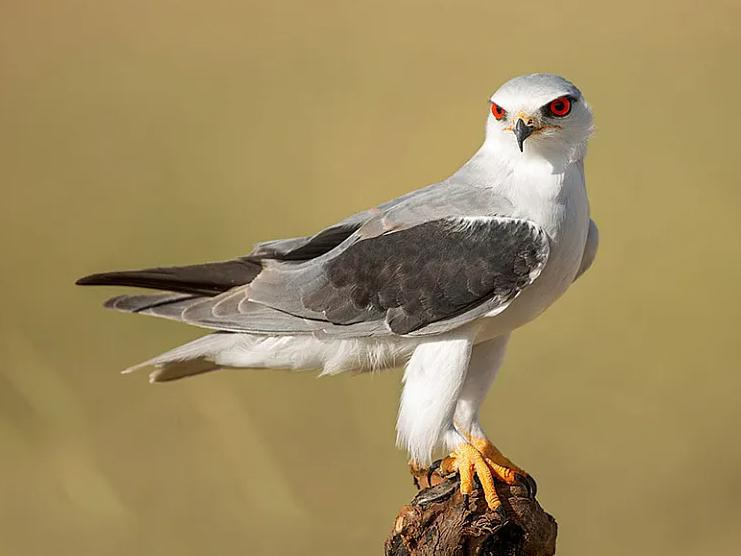
Élanion blanc
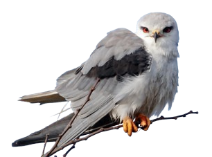
Petit rapace à grosse tête. Bien qu'il soit de taille inférieure, on le confond souvent avec les busards cendrés et Saint-Martin auxquels il s'apparente un peu à cause de colorations blanche, grise et noire. Toutefois, la silhouette est plus trapue et la queue plus arrondie.
L'Élanion blanc est gris et blanc avec les épaules noires et les yeux rouge foncé.
Les parties inférieures sont blanches.
La tête est blanche, avec un petit masque noir autour de l'oeil. Le bec est plutôt court. Le bec est noir avec la cire jaune. Les yeux sont rouge foncé. Les pattes courtes et nues et les doigts sont jaunes.
Les deux sexes sont semblables.
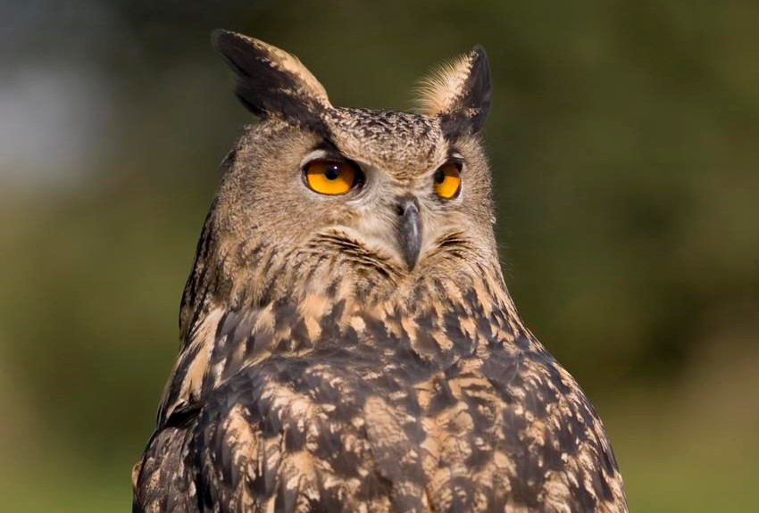
Grive draine
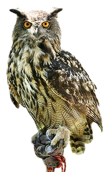
La Grive draine, grande grive à longue queue, est le plus grand de nos turdidés. C'est avec la Grive musicienne, plus petite, qu'on peut le cas échéant la confondre en vue de face et je pointerai les différences. Trois sous-espèces sont décrites, qui sont peu différentes de la nominale. Je décrirai cette dernière qui occupe l'Europe.
La Grive draine se reconnaît à sa grande taille, à ses parties supérieures d'un brun-gris froid dont l'uniformité est rompue par les liserés clairs des rémiges et des couvertures, à la pâleur des parties inférieures qui montrent des zones sombres plus ou moins visibles de chaque côté de la poitrine au niveau des poignets, au patron de tête (côté de la tête montrant de l'avant vers l'arrière un trait malaire partant du bec, un trait épais vertical sous l'œil et un arc à l'arrière des couvertures auriculaires, les trois noirâtres sur fond blanchâtre) et à la queue montrant du blanc aux rectrices externes. L'œil est sombre, le bec fort, noirâtre, avec du jaune à la base.
Vue de face, une musicienne montrerait un patron de tête proche, mais souvent moins marqué, avec une calotte d'un brun chaud et des côtés roux-chamois. De plus, la poitrine et les flancs seraient plus ou moins teintés de roux.
Le juvénile se reconnaît au manteau et aux scapulaires striés de beige-chamois.

Grive musicienne
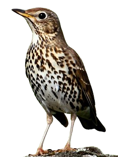
La Grive musicienne est d'une taille un peu inférieure à celle du Merle noir qu'elle côtoie souvent, mais la confusion n'est pas possible. C'est un oiseau plus trapu, avec une queue plus courte et un plumage plus clair. Les parties supérieures sont d'un brun assez chaud et sont assez uniformes d'aspect. Une nuance roussâtre est perceptible sur la calotte et les ailes tandis que le bas du dos, le croupion et les sus-caudales paraissent un peu plus gris. L'œil sombre est cerclé de pâle, ce qui le fait paraître grand. Le sourcil chamois est très peu marqué, ce qui la distingue de sa cousine mauvis. Les couvertures auriculaires chamois sont entourées de brun.
Enfin, les traits malaires noirâtres, bien marqués, se rejoignent sous la gorge pour former une sorte de collier tacheté. Les parties inférieures sont roussâtres sur la poitrine et les flancs, et blanc-crème sur le ventre et les sous-caudales. Des taches brun-noir en forme de V, ou de cœur, renversés, constellent la poitrine, le haut du ventre et les flancs. Les pattes sont roses. le bec est brunâtre avec la base de la mandibule inférieure jaune. Au vol, on distingue les couvertures sous-alaires orange pâle.
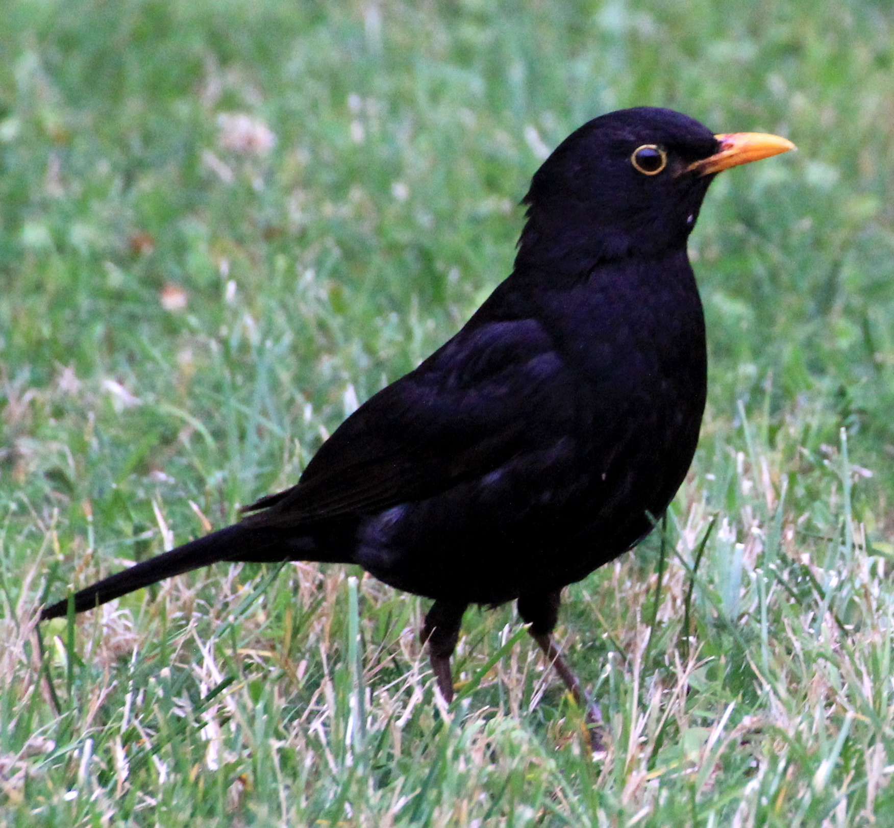
Merle noir
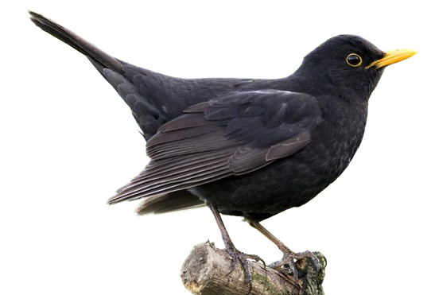
Le Merle noir est le plus grand turdidé commun de l'ouest du domaine paléarctique. Sa silhouette typique (longue queue et ailes courtes), sa grande taille et son plumage très sombre en font un oiseau remarquable, d'autant qu'il ne craint pas l'Homme. Il existe un dimorphisme sexuel assez prononcé.
Le mâle adulte nuptial est entièrement d'un noir profond et mat. Son bec est jaune orangé et l'œil est entouré d'un cercle oculaire de la même couleur. L'iris est gris ou brun. Les pattes sont rougeâtres ou brunâtres.
La femelle est brune avec le dessus assez sombre et le dessous plus pâle avec comme des mouchetures sombres. Il existe une grande variabilité inter-individuelle quant à la tonalité du plumage, souvent nuancé de chamois sur les parties inférieures, parfois même avec des caractères juvéniles conservés comme une poitrine roussâtre tachetée. Le bec est brun, mais peut se teinter de jaunâtre avec l'âge. Le cercle oculaire est moins visible, mais peut être aussi marqué que celui du mâle.
Le juvénile est bien différent, au point qu'on peut penser avoir affaire à une espèce différente, une grive par exemple. Son plumage est d'un brun assez clair, nettement teinté de roussâtre sur la face, la gorge et la poitrine, et entièrement moucheté ou strié de chamois dessus et dessous. Le bec est plus clair que celui de la femelle et les pattes sont rosâtres.
Les cas de leucisme sont fréquents chez cette espèce, probablement du fait de la consanguinité dans certaines populations, urbaines par exemple. Le leucisme se caractérise par la présence de plumes blanches au milieu des noires du plumage et est variable d'intensité. La disposition des taches blanches semble aléatoire et dans les cas extrêmes, le Merle noir peut-être majoritairement blanc. Il s'agit d'une anomalie génétique qui empêche la synthèse du pigment noir, la mélanine.
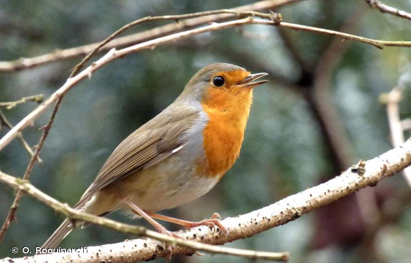
Rougegorge familier
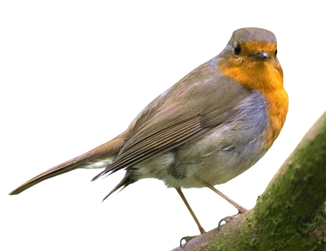
Le Rougegorge familier se présente comme un petit oiseau rondelet, avec des ailes relativement courtes atteignant péniblement le milieu de la queue. L'adulte est aisément reconnaissable à la couleur orangée qui envahit tout le devant du corps, front, lores, côtés de la tête, cou et poitrine. Cette grande zone orange est bordée d'un bandeau gris clair peu visible sur le haut du front et sur les côtés du cou et de la poitrine. Le reste du dessous est blanc sale lavé de roussâtre sur les flancs.
Les parties supérieures sont d'un brun nuancé d'olive, assez sombre. Le croupion et les sus-caudales sont d'un brun un peu plus chaud. Les rémiges sont ourlées de chamois, ce qui éclaircit un peu l'aile fermée sur laquelle se détachent les couvertures primaires plus sombres. L'œil est sombre. Le bec fin, court et droit est brun foncé, avec la base un peu plus claire. Les pattes sont rougeâtres ou brunâtres suivant la lumière, quelquefois rosées.